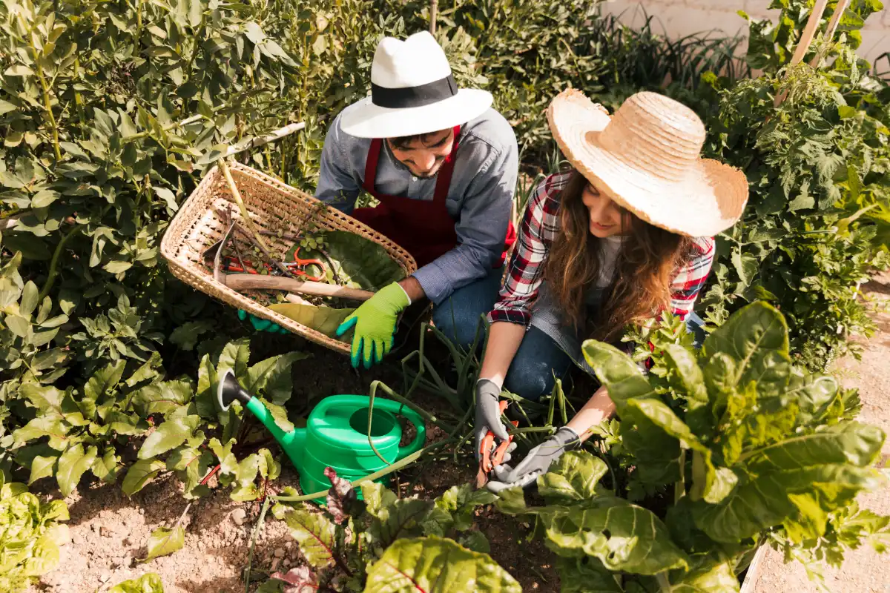
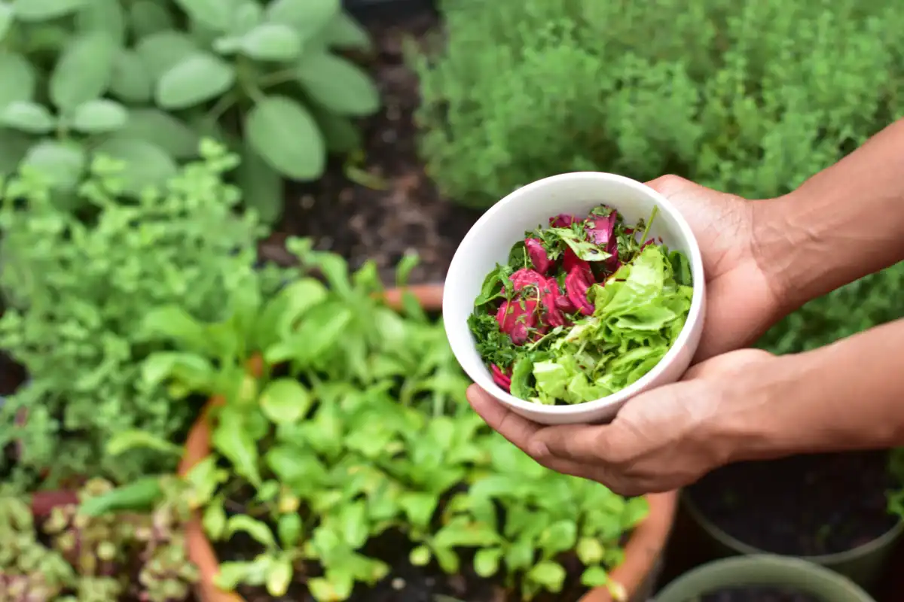
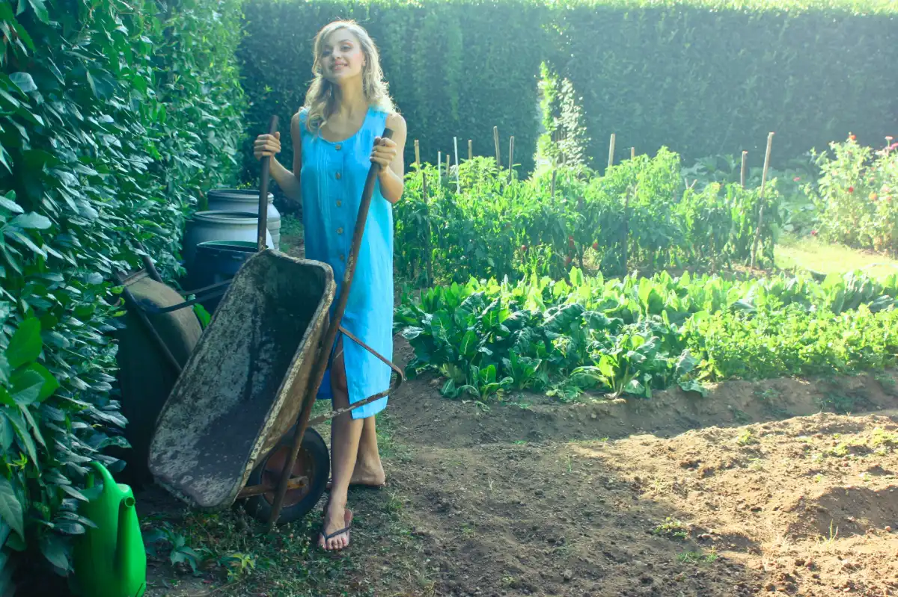

City Gardens
Home
Locations
Gallery
Contact us
Find our locations
You can find us in the following areas:

Grattan Crescent
southcentral@dublincity.ie
Braithwaite Street
southcentral@dublincity.ie
Blarney park
southcentral@dublincity.ie

Chapelizod
chapelizodallot@dublincity.ie
Bluebell
bluebellallot@dublincity.ie

Flanagan's Fields
southcentral@dublincity.ie